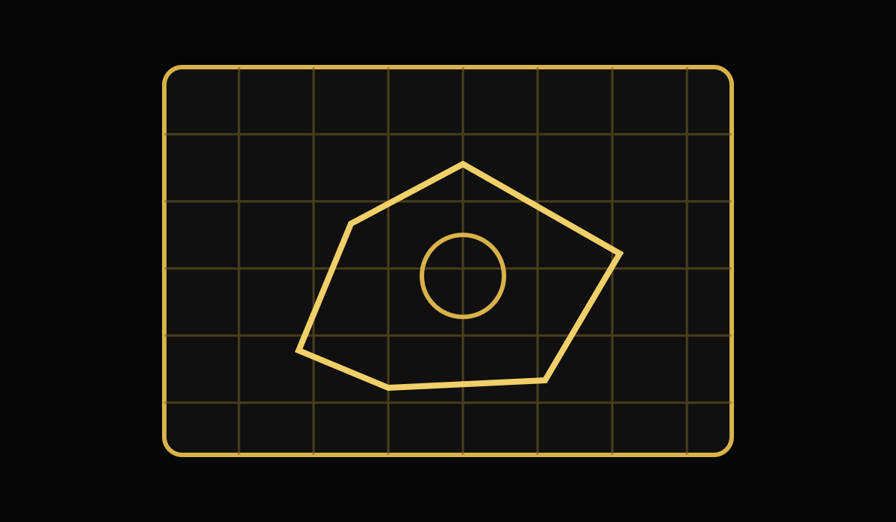

Cosmos Industrial
BLUEPRINT LIBRARY
Use the corporation BPO collection to create copies for your own industrial projects.
Blueprint Library
More than 420 Blueprint Originals.
The BPO library is located at Shedoo Leo II. Members create copies rather than removing originals from the corporation library.
Access note: the current guide lists BPO hangar access as TBD. Ask leadership for the latest access procedure.

How to Make Copies
Blueprint copy workflow
- Buy a station container or secure container and assemble it in your hangar.
- Rename the container with your character name.
- Move the container into the Input/Output hangar.
- Open the Blueprint tab in the Industry window.
- Set Input Material Location to BPO.
- Set Output Location to your named container.
- Set the ownership filter to Owned by Corporation.
- Choose the number of copies and start the job.
- When finished, click Done. The copies will be delivered to your container.